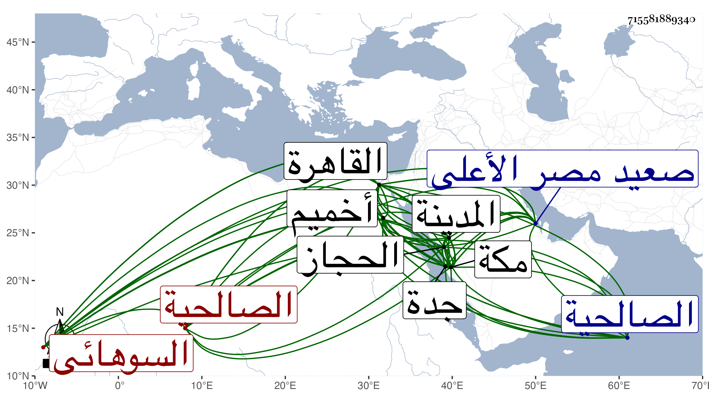

0902Sakhawi.DawLamic.ITO20230111-ara1.EIS1600.715581889340
Biography ID: 715581889340
501
محمد بن محمد بن محمد بن إسماعيل فتح الدين أبو الفتح بن الشمس السوهائي الأصل نسبة لسوهاء بضم المهملة ثم واو ساكنة وهاء مفتوحة بلدة من أعمال أخميم من صعيد مصر الأعلى ضبطها المنذري في معجمه القاهري الشافعي سبط الجمال عبد الله بن محمد السملائي المالكي زوج حليمة ابنة النور أخي بهرام ويعرف بالسوهائي . ولد في العشر الأخير من رمضان سنة ست وعشرين وثمانمائة بسويقة صفية من القاهرة ونشأ فحفظ القرآن والمنهاجين الفرعي والأصلي وألفيتي الحديث والنحو مع فصول ابن معط وغيرها وأخذ في ابتدائه الفقه والعربية عن الشمس محمد بن علي الميموني ثم لازم العلم البلقيني في الفقه من سنة إحدى وخمسين وإلى أن مات وأذن له في التدريس والإفتاء وكذا لازم التقي الحصني ف الأصلين والمنطق والجدل والمعاني والبيان والعربية بحيث كان جل انتفاه به وأخذ في المنطق والهندسة وغيرهما عن أبي الفضل المغربي وفي أصول الفقه عن الكريمي وكذا عن أبي القسم النويري في سنة موته بمكة وجد في الاشتغال وسمع على شيخنا والسيد النسابة وغيرهما بالقاهرة وعلى أبي الفتح المراغي والزين الأميوطي والتقى بن فهد وغيرهم بمكة وعلى أبي الفرج الكازروني وغيره بالمدينة وتدرب في الصناعة بوالده وقال أنه كان بارعا فيها وكذا تدرب بغيره وتكسب بالشهادة وتسامح فيها . وناب في قضاء جدة في سنة سبع وخمسين عن أبي الفضل بن ظهيرة وفي العقود قبل ذلك عن شيخنا ثم في القضاء في المحرم سنة ثمان وخمسين عن العلم البلقيني ونوه به وأرسله إلى الصالحية ومعه نقباؤه بسفارة ربيبه الصلاح المكيني واستمر ينوب لمن بعده واشتهر إقدامه ورقة دينه ودقة نظره فيما يوصل به المبطل بتزيينه مع فضيلته وتمام خبرته وكثرة استحضاره وتحركه في مباحثه وأنظاره ودهائه بصريحه وإيمائه فصحبه بل قربه لذلك أهل الغرض والهوى وتجنبه من في قلبه تقوى بحيث امتنع البدر البغدادي قاضي الحنابلة من تنفيذ مكتوب هو أحد الشهود على الحاكم الأول وهو البلقيني فيه ثم صار بعد يمتنع المثبتون من تنفيذ أحكامه وأسفر عن جرأة زائدة وتهور تام ودخل في قضايا مشكلة وأمور معضلة وأهين من الأمير أزبك وغيره وألبسه الأشرف قايتباي بعناية دواداره الكبير بعد عوده من السفرة الشمالية خلعة لقيامه بأعباء التعدي بالهدم الكائن بالقاهرة الذي ارتكب فيه كل محذور وانتصب للأملاك والأوقاف بالبهتان والزور وما كان بأسرع من أن أطفأ الله جمرة ناره وخذله بعد مزيد اقتداره وما وسعه بعد قتل الدوادار إلا الفرار بالتوجه لبلاد الحجاز لظنه أنه به قد فاز وذلك في سنة خمس وثمانين ، وكان قد جاور هناك قبل في سنة سبع وخمسين ثم في سنة اثنتين وثمانين وما نفق له هناك سوق لجلالة عالم مكة ويقظته مع أنه أقرأ هناك الفقه والأصول وغيرهما بل زعم أنه شرع في شرح التدريب ورجع الآن بعد مجاورته سنة ست في أول سنة سبع فتزايد خموله ولم ينهض لاستنابة الزين زكريا له مع شدة سعيه وتجرع فقرا تاما وعاد حامده من الظلمة له ذاما وأنعم عليه السلطان على رغم منه بعشرين دينارا في توسعة رمضان وبجوالي مما لم يكن يكتفي به في اليوم والأمر فوق ما وصفناه وربما أقرأ الطلبة في التقسيم وغيره ولا زال في فقر مدقع وذل موجع وتناول لليسير من الصغير فضلا عن الكبير حتى مات في ليلة الخميس سادس عشرى شعبان سنة خمس وتسعين وصلي عليه من الغد سامحه الله وإيانا .
